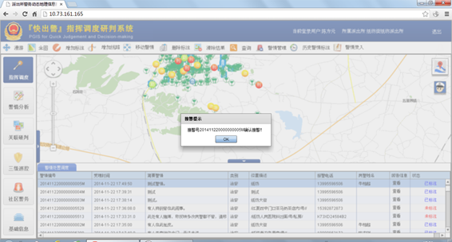
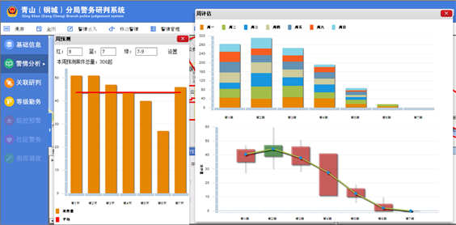
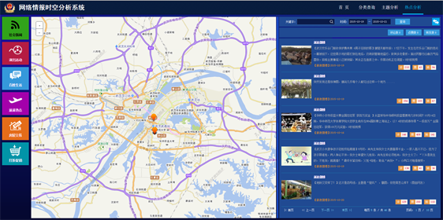
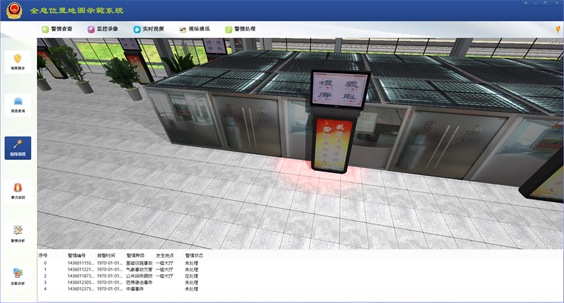
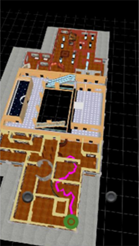
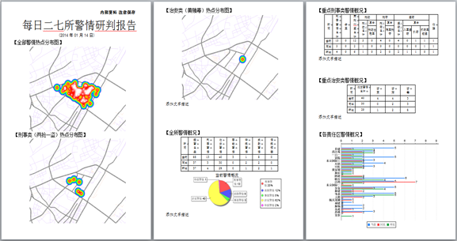

示范应用
城区公安分局“快出警”系统
“快出警”系统是为了提高基层公安机关接处警效率，进一步优化接处警流程的背景下进行研究开发的。该系统以警情位置为核心，充分融合公安机关现有110接警系统、PGIS、警综、警务通等系统信息，对警情进行实时监控与报警，分析警情周边警务资源并进行实时动态指挥调度，实现了110及多源警务信息综合接入、对报警人短信反馈、GPS二次准确定位、现场图片语音回告、警情一键派送、警务信息管理、移动接处警等功能。
青山分局警务研判系统
为进一步加强警务实战化建设，全面提升基层公安机关，特别是派出所的实战能力，实现“一室引领三队”的警务机制，使巡防网格化、研判精细化，从而建立由分局指挥中心到各派出所、各大队的至上而下的指挥室引领各部门的工作系统非常必要。目前为分局指挥中心和各派出所、各大队提供具备基础信息、警情分析、关联研判、等级勤务、临控预警五大功能的分局警务研判系统。
网络情报时空分析平台
建设大情报时空分析系统，是为了实现数据来源全面、数据时效保障、挖掘分析强大的智能情报系统。同时，该系统也是武汉公安大数据“161”工程的应用支撑之一，对于建设平安武汉、提升汉警战斗力具有重要意义。系统希望以网络情报时空分析、主题聚焦分析、事件热点趋势分析、时空轨迹碰撞分析和关联搜索技术为突破口，解决当前情报系统存在的问题，打造全国领先的以情报大数据挖掘分析为驱动的智能情报分析系统。
常州火车站室内外导航
室内外一体化导航是以互联网、物联网、智能定位引擎、动态路径规划等为技术支撑，以矢栅一体化地图数据为核心，通过互联化、物联化、智能化的方式，促进导航系统各个功能模块高度集成、协调运作，实现室内与室外信息的“强度整合、深度应用”之目标的导航发展新理念和新模式。本系统以常州市火车站为示范场景，结合室内外定位系统、地理信息、警务信息、指挥调度为一体的综合性示范系统，为公安局处理日常警务、突发警情决策提供技术支撑。
博物馆室内外导航
三维室内导航为描述建筑物的动态变化提供了更多的可能性，如建筑的闭合运动、某些人们难以到达的区域或被移动障碍物影响的区域。因此，本研究的目的是通过为湖北省博物馆创建“Daren”三维室内导航应用程序来展现三维室内导航系统的功能。此应用程序已于湖北省博物馆测试成功:实现了用户的精准定位以及正确引导用户到达目的地。该研究表明室内导航系统具有很大的挖掘潜力。
江岸区派出所警务动态地理信息指挥研判系统
以警务位置信息（案发位置、责任区位置、监控目标位置等）为核心，综合利用人员、警情、视频等各种动态信息进行接入、关联与分析研判，为派出所指挥研判部门进行决策分析提供技术支撑。系统通过对各种信息的综合关联、智能分析，充分挖掘重要信息，并将分析结果精确及时提供给派出所指挥人员，以满足提高派出所指挥研判工作高效性和精准性的需求。
城区公安分局“快出警”系统
返回
调度指挥模块主要对警情信息、民警和巡逻车位置进行实时的推送，并对警情周围的可用警力和高危人员进行查询，并进行调度派遣，派遣给民警的同时给报警人发送确认信息, 对于回告信息可进行管理。
（1）警务信息接入
系统接入已有的地理信息，包括道路、辖区摄像头、主要的POI点、派出所辖区范围。民警信息包括民警的姓名、联系方式、民警类型。系统实时监控分局110接警信息表，对新来的警情进行查询分析，并将预处理后的警情推送至客户端，并以响铃和图标闪烁的方式实现自动报警。如图所示：
（2）警情标注
调度员根据警情信息描述的地址在地图上大致位置进行标注，针对不同警情类型系统自动判断并绘制不同图标。标注的图标可以被移动和删除。警情标住如图所示：
（3）警情派发
选择已标注的警情图标，系统会查询显示警情周围一定范围内（如100米）警力、摄像头分布情况；调度员可以选择一键派警模式，系统自动匹配民警并派警，也可以点击民警选择，选择对应的民警进行警情派发。如图所示：
（4）报警反馈
调度员在进行警情派发的同时，系统自动调用短信平台给报警人发送报警反馈信息，告知报警已被接受，民警正赶赴现场，并提醒报警人保持联系畅通。报警反馈短信设计如图所示：
（5）接处警反馈
出警民警在终端的接警、到达拍照、处警回告都会自动发送通知到指挥端，以便指挥端能够及时查看相关信息，采取合理的措施。确认接警提示如图所示：

（6）回告信息管理
当收到处警回告时，表明该警情已处理完毕，调度员可以查看警情回告信息，回告信息内包括出警民警姓名、确认接警时间、确认到达时间、处警回告时间、警情排队耗时、出警耗时、处警耗时、现场的图片信息、处警的录音和文字记录等。并且可以对回告信息增加备注，但是不能修改回告信息。回告信息管理如图所示：
青山分局警务研判系统
返回
（1）基础信息
该模块包括基础图层管理、行业图层管理、警情位置解析与自动上图、警情管理、案件资料上传与下载。其中，基础图层管理模块和行业图层管理模块实现了对责任区、路网、地址库、消防栓、摄像头以及各类行业地物位置的可视化显示；警情位置解析与自动上图模块对警情的发案地址进行语义解析，实现警情的自动上图；警情管理模块能查看各派出所和各大队受理的详细历史警情信息；案件资料上传与下载模块提供了对警情相关案件的现勘资料，如案件基本描述、案件走访视频、指纹信息等资料的上传与下载功能。具体如图所示：
（2）警情分析
该模块包括责任区警情分析、社会面警情分析、每日警情分析、警情预测、案件链分析。其中，责任区警情分析对派出所各个责任区的警情数量进行统计，以不同颜色表示各责任区的发案量；社会面警情分析对派出所各个道路周围的警情数量进行统计，以不同颜色表示各道路周围的发案量；每日警情分析以图表的形式统计各个时段的发案量，并计算出警情的聚集区域；警情预测模块根据选定的警情类型和时间参数进行周预测、周评估、趋势分析和近重复分析；案件链分析通过历史发生案件，选取相关关联要素，找出存在关联的系列案件。具体如图所示：

（3）关联研判
该模块包括警情综合查询与可视化、人案时空关联分析，历史活动轨迹查询。警情综合查询与可视化模块实现了对历史警情进行查询显示在地图上。人案时空关联分析模块实现了在地图上选择某一个案件，显示案件周围500米以内分布的重点人员。历史活动轨迹查询模块实现了查询重点人员的活动轨迹，具体包括其旅店、网吧的活动记录。具体如图所示：

（4）等级勤务
该模块包括勤务等级图生成、发案热点与巡逻区域计算、巡逻路线推荐、研判报告生成。其中，勤务等级图生成模块实现了采用红、黄、蓝、绿四种颜色表示分局内每个派出所应当启动的勤务等级；发案热点与巡逻区域计算模块实现了利用空间聚类的方法找出警情发生的热点部位，同时画出民警的巡逻区域；巡逻路线推荐模块实现了利用巡逻区域与路网求交，自动计算出民警的巡逻路线；研判报告生成模块实现了将以上的分析结果以报告文档的形式打印输出。具体如图所示：

（5）临控预警
该模块包括大情报重点人员实时监控，新增重点人员报警与上图，历史预警查询与管理。其中，大情报重点人员实时监控模块实现了对大情报中的重点人员旅店、网吧记录进行实时监控，统计和查看相应辖区范围内的重点人员的人员信息；新增重点人员报警与上图模块实现了当有新的重点人员进入相应辖区后，系统能立即报警，并在地图上显示该新增人员的实时位置；历史预警查询与管理模块实现了查看分局和派出所辖区范围内一段时间里面所有进入过该地区的重点人员记录。具体如图所示：
网络情报时空分析平台
返回
（1）网络情报信息概况
网络情报信息概况主要对爬取的信息进行简单统计，统计内容主要包括两个方面，一方面是针对公安情报部门关注的六大主题信息进行统计，包括案件、民生、人员、服务、管理和社会；一方面是针对不同类型网站来源的信息进行统计，主要包括社会新闻类，百姓生活类，演出活动类，商品交易类，交房信息类和打折促销类。为深入了解不同类型主题的分布情况，本平台对情报信息进行上图，并提供热点分析功能，具体如下图所示：
（2）网络情报信息分类与查询
由于不同类型的情报信息有不同的关注要点，系统将爬取的不同类型网站的关键字段提取出来，过滤掉大量无关信息，直接切中关键所在，同时为情报信息查询提供数据基础。例如：58同城、赶集网中包含大量的二手销售信息，针对这种类型网站系统存储的主要内容有销售商品信息和卖家信息，其中销售商品的关键字段包含：商品编号,商品类型，商品网页链接,商品使用时间，商品交易地点，商品销售主题，商品销售发布时间, 商品图片信息，商品详细信息；卖家信息的关键字段包含：卖家有户名，卖家认证信息（微信，邮箱，电子邮件，电话，身份证），卖家联系方式（电话，qq），卖家地点，卖家注册时间，卖家用户名。亿房网等房屋交易网站存储的主要内容：开盘楼市编号，楼房实景图片，楼房详细链接，楼盘名称，楼盘价格，楼盘地址，开盘时间，楼盘最新消息等。
网络情报信息按照系统所关注案件、民生、人员、服务、管理和社会六类信息，将互联网获取的信息分类组织。通过对信息的分类组织，舆情系统用户可以根据自身关注的主题信息进行查询，方便快捷的获取所需要的内容，为实际的分析决策提供有力的数据支持。用户可根据主题类型，情报发生的所在分局，起始和终止时间以及关键字查询目标信息；同时，由于社会新闻类信息具有种类多，数据杂，噪声大等特点，导致无效信息增多，因此本平台提供了对情报信息修改、删除和保存功能，如图所示：
网络情报信息按照系统所关注案件、民生、人员、服务、管理和社会六类信息，将互联网获取的信息分类组织。通过对信息的分类组织，舆情系统用户可以根据自身关注的主题信息进行查询，方便快捷的获取所需要的内容，为实际的分析决策提供有力的数据支持。用户可根据主题类型，情报发生的所在分局，起始和终止时间以及关键字查询目标信息；同时，由于社会新闻类信息具有种类多，数据杂，噪声大等特点，导致无效信息增多，因此本平台提供了对情报信息修改、删除和保存功能，如图所示：
（3）网络情报主题分析
网络情报主题分析主要从58同城、百姓网、赶集网等商品交易网站获取有价值的信息，比如发布商品数量最多的卖家个人信息，包括卖家姓名，卖家手机号，以及所有发布的商品信息；同时，还提供根据销售来源，卖家类别（个人，商家），销售类别（自行车、电动车、摩托车、笔记本、手机等），商品发布的起始时间和终止时间，以及关键字的查询，和地图展示交易地点的功能，见图：
（4）网络情报主题分析
网络情报主题分析主要从58同城、百姓网、赶集网等商品交易网站获取有价值的信息，比如发布商品数量最多的卖家个人信息，包括卖家姓名，卖家手机号，以及所有发布的商品信息；同时，还提供根据销售来源，卖家类别（个人，商家），销售类别（自行车、电动车、摩托车、笔记本、手机等），商品发布的起始时间和终止时间，以及关键字的查询，和地图展示交易地点的功能，见图：
对于主题分析的统计功能，主要包括两个方面，一方面是针对所有信息进行发布全局统计，即分析在指定商品交易来源，卖家类别，销售类型前提下，发布商品数量前几名的用户，并按不同时间节点进行统计；另一方面是对通过卖家姓名，手机号，QQ号，交易地点等筛选项得到的商家发布信息的统计结果，见图：
（5）网络情报热点分析
网络情报热点分析主要针对社会新闻、演出活动、百姓生活、旅游热点、房屋交易和打折促销六类主题进行信息展示与统计分析。在信息展示部分，针对不同的主题特点，提取重点核心内容，见图XXXX，比如社会新闻类，以新浪微博、今日头条、大楚网等作为数据源，显示内容包括标题、内容、发布时间、评论数和转发数等，而对于房屋交易主题，则更关心楼盘交房时间、地点和价格等。

在统计分析部分，也从主题特点出发，综合考虑可挖掘的情报内容，为公安情报部门提供有利的数据分析支持。以百姓生活类为例，首先统计发布的消息在武汉市公安局下属各分局的总数量，并以柱状图和饼状图的形式直观展示统计结果，如图XX所示，共计144事件发生在江岸区分局，明显多于其它分局；另一方面，为进一步掌握普通民众关心的事件主题类别，与公安相关部门进行讨论，总结了18类主题，分别包括公共设施类、受骗事件类、社区物业类、生态文明类、产品服务类、寻人寻物类、房产问题类、寻求帮助类、噪音困扰类、三农问题类、收费问题类、交通事件、暴力恐吓类、盗窃类等，通过分析各类主题特征，提取了大量主题关键词，对现有数据分别进行归纳总结，并以柱状图的形式进行了统计，如图XX下方所示，结果表明社区物业类事件、劳动就业和教育问题是群众比较关心的社会话题。对于房屋交易类网络信息，也提供了武汉市各分局的交房分布情况，其中，江夏区和东湖新技术开发区交房量较多；本系统还针对不同年限，从1月至12月的交房数量，进行同比和环比，从图XX中可以看出在通常在年中和年底是楼盘交房的高峰期，针对该情况，公安相关部门需提前做好与小区物业沟通的准备，查看小区安全设施是否齐全。
常州火车站室内外导航
返回
本系统以常州市火车站为示范场景，结合室内外定位系统、地理信息、警务信息、指挥调度为一体的综合性示范系统，为公安局处理日常警务、突发警情决策提供技术支撑。系统接入了场景信息点（POI）信息、案件信息、突发警情信息、实时定位信息等多种信息，并且可以与移动端进行文字、语音、视频等多种通讯方式，能够精确、实时的将信息提供给公安局指挥人员，以满足公安指挥系统的精确性和高效性。
（1）定位导航模块
室内外一体化导航应用软件于移动手持终端的初始化界面如图所示。通过多点触控方式使得移动终端上的应用对于地图的漫游、缩放、平移、旋转皆拥有良好用户体验。用户点击地图上的建筑物结构标识，即可切换移动端上的可视空间，在2.5维的室外地图与2维室内地图间进行切换浏览，参见下图：

如下图所示为该软件的室内室外的一体化路径规划主界面，允许用户进行起止点的查询与选取、导航模式的选取，以及针对公交路线的规划方式的选取。软件向用户提供四种方式来选择路径的起点与终点，分别为：”列表方式”、”图上选点”、”查询选点”、”当前位置”（默认方式）。导航起止点的选取界面参见下图。对于导航模式的选取，软件分别提供了行车路线以及步行路线，而行车路线的优化又包括了“最少时间”、“最短距离”、“避开高速”三种最优寻径模式，最终软件会得到符合用户选择的室内外一体化的最佳路线，导航模式选取界面参见下图。
当用户将自己的选择全部提供给软件后，将会得到一条从室内到室外抑或从室外到室内的最佳行车、步行、或者公交路线。本操作示例选取室外常州市武进人民医院作为起点，终点选择常州火车站二楼候车室超市,如下图。在用户选择完成点选条件后，该软件将提供一条从室外到室内的最佳路线，如下图所示为室外部分的导航路径。

如下图所示为室内部分导航路径，用户可以在漫游室内地图后，点击右侧切换楼层，此时软件将重新绘制导航路径，以适应当前楼层，并能够有效探测并避开可移动或是有开放时限的障碍物，提供最佳室内导航方案。
（2）地图展示模块
地图展示模块主要包括火车站三维模型贴地浏览，火车站一楼大厅、火车站二楼大厅、火车站广场360度中心旋转浏览，火车站广场到火车站二楼大厅的飞行浏览，火车站内部全息浏览以及火车站重点设施浏览等功能。其中，火车站三维模型贴地浏览是用户可以通过键盘操作，将视点移到三维模型的任何位置，本系统通过键盘操作可以调整视点的位置、视点的角度，实现多自由度的浏览，以方便用户可以直观、清楚的了解火车站三维场景的任意位置以及周边设施；火车站一楼大厅、火车站二楼大厅、火车站广场360度中心旋转浏览是视点分别在火车站一楼大厅、火车站二楼大厅、火车站广场的中心，视角自动旋转360度，环视火车站一楼大厅、火车站二楼大厅、火车站广场的三维场景，可以直观的给用户一个火车站一楼大厅、火车站二楼大厅、火车站广场三维场景的初步印象；火车站广场到火车站二楼大厅飞行浏览是视点沿着直线从火车站广场中心到二楼大厅中心，视角保持不变，在从火车站广场飞行进入火车站二楼大厅的时候，可以全息浏览火车站内部的场景，给用户对火车站广场和火车站内部更加清晰感受；火车站内部全息浏览是视点在火车站二楼大厅楼顶，视角自动旋转360度，可以清晰的全息观察火车站一楼大厅、火车站二楼大厅，让用户在一个视点即可全息了解火车站整个三维场景的概况；火车站重点设施浏览和火车站三维模型自由浏览相似，用户可以自由移动视点和视角，区别在于火车站重点设施浏览着重强调火车站中的重点设施，以方便对于某类重点设施有需求的用户能够清晰的观察到重点设施，本系统中包含的重点设施有摄像头和出入口两大类。在所有浏览功能中，除了火车站重点设施浏览只显示用户选择的重点设施的信息点（POI）以外，火车站三维模型中的所有信息点均会显示在场景中，用户可以点击查看信息点的详细信息。具体实现如图所示。
（3）信息查询模块
信息查询模块主要包括警情查询、警员信息查询和火车站信息点（POI）查询等功能。其中，警情查询是用户双击屏幕下方的案件列表中一项案件，系统会显示查询警情的图片信息、音频信息和视频信息，已达到对案件的文字、图片、音频、视频等全面的记录和了解；警员信息查询是系统弹出警员列表，支持警号查询和直接双击警员列表中一位警员两种方式查询，选择查询警员完成后系统会自动漫游至三维场景中查询警员的附近位置，方便用户了解警员的实时动态；火车站信息点查询是系统弹出火车站信息点列表，用户选择火车站信息点的大类，目前可供选择的有摄像头和出入口两类，系统同样也提供火车站信息点编号查询和直接双击火车站信息点列表中一项信息点，选择信息点完成后系统会自动漫游至三维场景中信息点的附近位置，方便用户了解信息点附近的三维场景。具体实现如图所示。
（4）指挥调度模块
指挥调度模块主要报告警情查询、现场通讯、实时视频、警情处理等功能。其中，警情查询是针对新来的警情进行查询分析，用户双击屏幕下面的案件列表中一项警情，系统会漫游至三维场景中警情位置，实现警情位置标注，帮助用户查看警情周边的三维场景和人员实时状况；现场通讯是针对警情位置周边的警察，用户打开屏幕右方的通讯栏，双击通讯列表选择警察编号，以实现与配置移动端的警察现场通讯，通讯方式包括语音、文字、视频等多种方式，帮助用户对突发警情有更加详细、准确的了解；实时视频是针对警察位置周边的警察，用户可以选择双击三维场景中的警察模型，对配置移动端的警察发送打开摄像头指令，配置移动端的警察打开手机摄像头，实现指挥端接入突发警情位置附近警察的实时视频，以全面、直观的查看突发警情的现场情况，帮助指挥端对现场情况做出准确判断；警情处理是指挥端对于突发警情下达相关指令，用户可以选择双击三维场景中突发警情位置附近的警察模型，针对突发警情下达指挥端的命令，对配置移动端的警察发送命令，配置移动端的警察接受命令并且反馈终端，以实现指挥调度的功能。

博物馆室内外导航
返回
下图描述了图形用户界面的主要模块以及它们之间如何关联。橙色和蓝色的模块将使用Android应用程序中的图形布局工具，而地图模块的实现更为复杂，需要先在unity3D中开发再与Android应用程序集成。
创建一个新的布局可以通过添加一个新的Android xml文件并设置其根元素为布局来实现。每一个模块至少创建一个布局。如下图所示，首先在菜单中添加5个按钮以提供选项：热门展览、推荐路线、查找地点、地图和其他信息。用户点击按钮后将跳转至一个对应的新模块并使用相应功能。
“热门展览”模块用一个列表显示参观数最多的展览。用户选择展览的图片后，页面将跳转至地图视图以显示用户的当前位置以及前往该展览的最短路径。此外，用户可点击右上角按钮回到主菜单。
“推荐路线”模块提供一些博物馆所推荐的观览路线。用户点击一个具体路线后，页面跳转至地图视图。用户先被引导至路线的起点，然后沿预定路线进行游览。
“查找地点”模块可以让用户搜索或选择他们想去的地方，如展览、卫生间或出口。用户当前位置至选择地点的路线在地图中显示。
“其他信息”模块提供博物馆的一些非空间信息，如开放时间和活动。
由于时间的信息获取的限制，后面3个模块的功能尚未完全实现。
“热门展览”模块用一个列表显示参观数最多的展览。用户选择展览的图片后，页面将跳转至地图视图以显示用户的当前位置以及前往该展览的最短路径。此外，用户可点击右上角按钮回到主菜单。
“推荐路线”模块提供一些博物馆所推荐的观览路线。用户点击一个具体路线后，页面跳转至地图视图。用户先被引导至路线的起点，然后沿预定路线进行游览。
“查找地点”模块可以让用户搜索或选择他们想去的地方，如展览、卫生间或出口。用户当前位置至选择地点的路线在地图中显示。
“其他信息”模块提供博物馆的一些非空间信息，如开放时间和活动。
由于时间的信息获取的限制，后面3个模块的功能尚未完全实现。
“DAren”应用程序在湖北省博物馆多次测试后于2013年10月10日开始运行。下图显示了3个独立导航操作的结果：3D模型鸟瞰图中，粉红色的导航路线清晰可见。其中，绿色圆圈表示用户在发出导航请求时的实际位置。而红色圆点是其计算位置。

值得注意的是导航的起点在大多数情况下是用户所在的一个房间内，这个节点并不一定总是距离用户最近。此外，用户需要等待大约5秒让系统由多个捕获的位置最终确定导航起点。虽然存在以上问题，但并不降低用户体验。
在三维查看器中显示的导航路线是程序计算的实际最短路径。因为路径的可视化是根据自动提取的网络，所以导航系统中的线条并不如预期一样笔直。
三维模型的可视化是非常明确的，使用可识别的特征可以让用户相对容易地找到其自身位置。虽然三维查看器中的平移和旋转不太便捷，但它确实为根据用户喜好调整视图提供了可选操作。此外，变焦功能增加了可动性，改善三维模型的可视化性能。
尽管存在微小缺陷，但本应用程序可用于导航。这个项目的最终目标是游客通过使用”DAren”应用程序找到路径。同时博物馆也可以通过无线监控来了解全馆和展览的大体情况。
在三维查看器中显示的导航路线是程序计算的实际最短路径。因为路径的可视化是根据自动提取的网络，所以导航系统中的线条并不如预期一样笔直。
三维模型的可视化是非常明确的，使用可识别的特征可以让用户相对容易地找到其自身位置。虽然三维查看器中的平移和旋转不太便捷，但它确实为根据用户喜好调整视图提供了可选操作。此外，变焦功能增加了可动性，改善三维模型的可视化性能。
尽管存在微小缺陷，但本应用程序可用于导航。这个项目的最终目标是游客通过使用”DAren”应用程序找到路径。同时博物馆也可以通过无线监控来了解全馆和展览的大体情况。
江岸区派出所警务动态地理信息指挥研判系统
返回
（1）指挥调度
指挥调度主要包括警情实时监控与自动报警、警情可视化与编辑、警务资源指挥调度、拦截路径分析等功能。其中，警情实时监控与自动报警模块实时监控分局110接警信息，对新来的警情进行查询分析，并将预处理后的警情推送至客户端，实现自动报警；警情可视化与编辑模块根据警情类型利用不同的警情图标进行可视化，显示警情的基本信息，并提供对警情的属性和空间信息编辑功能；警务资源指挥调度模块以警情位置为核心，分析警情周边警务资源分布，对周边可用警力、视频摄像头、巡逻车进行调度指挥，并能分析出周边重点人员和高危人员。其中，点击短信调度按钮将以短信方式将警情信息发送至民警手机上，点击电话调度按钮将直接对选定民警拨号，进行电话调度；拦截路径分析模块根据不同的逃逸时间和逃逸速度进行拦截路径分析，并对分析出的可能的逃逸路径和推荐的拦截点进行可视化。具体如图所示:
（2）关联研判
关联研判主要包括关联警情综合查询与可视化、案案时空关联分析、人案时空关联分析、线索链生成等功能。其中，关联警情综合查询与可视化模块根据特定的警情类型和查询时间参数对警情进行综合查询，并将查询出的警情在地图上进行可视化；案案时空关联分析模块以警情位置为核心，对警情周围重点人员的历史轨迹进行分析，并查询历史轨迹点一定时空范围内的历史同类型警情，并对分析结果进行可视化；人案时空关联分析模块以警情位置为核心，可查询出警情周边一定时空范围内的重点人员信息，并对重点人员的历史轨迹进行可视化，实现人案时空关联；线索链生成模块主要是系统按发案区域、发案时间以及案件类型等查询条件展现案件的空间位置分布，并可进一步抽取警综平台案件库中的案件研判信息进行自动的统计分析汇总，再结合视侦、现勘等工作情况人工筛选分析选定可疑人员，并利用整合的DQB系统、三员线索系统等刻画嫌疑人轨迹，以此形成一条完整意义的线索链（或者称为成型产品）派发到刑侦部门转化为战果。具体实现如图所示：

（3）警情分析
根据警情发生高低，统计分析警情总体状态，确定警情高发区域，并对下阶段警情预测，自动生成各类研判报告；对历史警情进行近重复分析，得出不同时空尺度下案件近重复发生风险的显著程度结果。具体实现如图所示：

（4）三级巡控
三级巡控重要包括一级路网巡控、二级连通道路巡控、三级社区巡控等功能。其中，一级路网巡控模块可新增和编辑一级巡控线路，并对巡控线路和巡逻车轨迹进行可视化；二级连通道路巡控模块可新增和编辑二级巡控线路，并能设置巡控线路的巡逻民警，还可对巡控线路和巡逻民警轨迹进行可视化；系统可新增和编辑三级巡控线路，并能设置巡控线路的巡逻民警和线路所属责任区，还可对巡控线路和巡逻民警轨迹进行可视化。具体实现如图所示：
（5）社区警务
实现社区行业信息上图显示，对社区范围内的房屋、人口、视频、消防、危化单位、警力等重要资源进行实时管控，对社区内网吧、旅店、小区等场所进出人员进行实时监控，控制重点人员、境外人员和高危人员流动范围，实时部署社区安保力量，对社区范围内的警务信息进行综合管理、分析，并能进行及时指挥调度。具体实现如图所示：

（6）任务标绘
以任务为核心管理事件，实现任务的逐级分解，为任务分派对应的警力资源，对警力资源在任务中的执行状态在地图上标绘，实现对任务的安排、分配与监控。子模块包括任务分解、任务标绘、任务执行功能。
（7）基础信息
针对不同业务需求，实现图层自由叠加以及实现部分图层移动、增加、删除的方法。主要包括基础行业图层管理、警情标注、警情管理。其中基础图层管理实现对责任区、路网、地址库、消防栓、摄像头以及标注要素的可视化显示；行业图层管理模块实现对18类行业图层的可视化显示；警情标注模块实现对警情的新增和编辑功能；警情管理模块实现对警情信息的编辑和管理功能。具体实现如图所示：